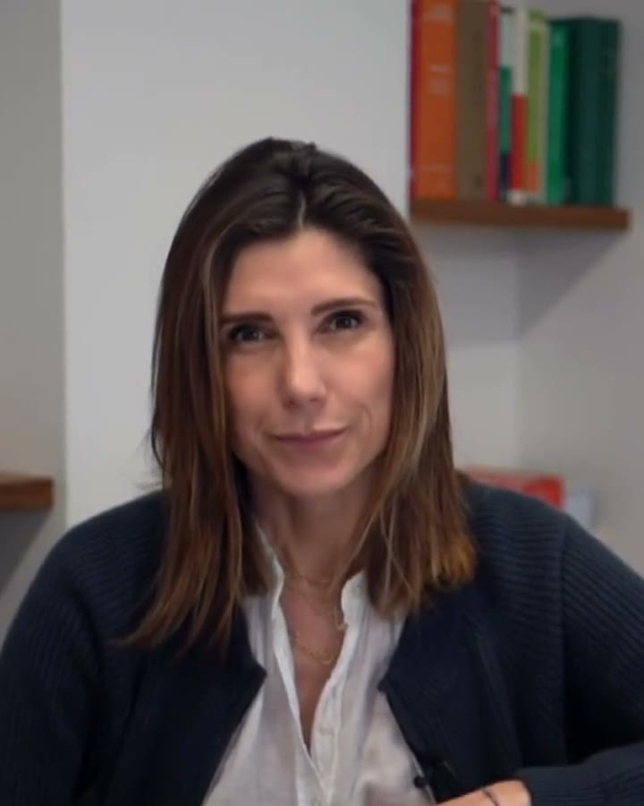

Video · Famiglia e minori · 2 minuti
Il meccanismo del Tribunale dei minori
In due minuti l'Avv. Angelelli spiega come funziona il Tribunale dei minori.
Per capire
Video e articoli brevi, divisi per materia. Si parte dalla domanda, con parole semplici.

Video · Famiglia e minori · 2 minuti
In due minuti l'Avv. Angelelli spiega come funziona il Tribunale dei minori.
Rassegna stampa · Penale
La Provincia, 15 luglio 2026
«Non voleva assolutamente la perizia: crede che la diagnosi sulla sua psiche sia una colpa. Ecco come l'ho convinto.»
Intervista all'Avv. Angelelli sulla difesa di un uomo davanti alla Corte d'Assise, e su come si accompagna una persona ad accettare una perizia psichiatrica. L'articolo completo è sull'edizione della Provincia del 15 luglio 2026.
Su questa materia sto preparando i primi approfondimenti. Se hai una domanda, scrivimi.